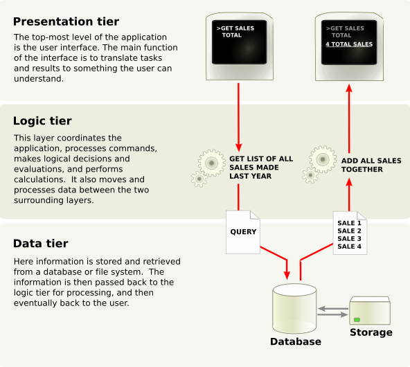
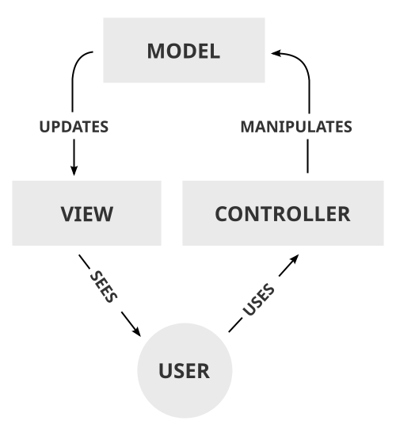

Xây dựng Back-end
với NodeJS & Express
Chương trình 12 buổi đi từ “Node là gì?” đến một API hoàn chỉnh có MySQL, đăng nhập JWT, upload file và deploy lên Internet. Mỗi buổi có slide trình chiếu và bài tập đi kèm.
5 giai đoạn · 12 buổi
Front-end (HTML/CSS/JS) học trước theo chương trình cũ. Phần Back-end này nối tiếp, dùng chính trang web đã làm để gọi API.

Bức tranh tổng thể
Front-end (Presentation) gọi API ở tầng Logic do Express xử lý, dữ liệu nằm ở tầng Data — MySQL. Cả khóa học là quá trình dựng dần từng tầng này.
15 buổi học (3 FE + 12 BE)
Chọn buổi để mở slide trình chiếu hoặc xem bài tập. Mỗi buổi ~3 giờ: lý thuyết – demo live – thực hành.

Trình chiếu tiện dụng
Trình chiếu ngay trên trình duyệt — không cần cài đặt, không cần mạng (ảnh đã tải sẵn).
Toàn màn hình 16:9
Slide tự co giãn theo màn chiếu. Bấm F để vào / thoát.
Tổng quan & nhảy slide
G xem lưới thumbnail; gõ số + Enter để nhảy thẳng.
Hiện từng ý
Ý hiện dần mỗi lần bấm → để dẫn dắt lớp. P để tắt.
Ghi chú giảng viên
N mở lời gợi ý, câu hỏi cho lớp, lỗi hay gặp, thời gian.
Laser · Màn đen · Zoom ảnh
L con trỏ laser, B màn đen, click ảnh để phóng to.
Đáp án mẫu ẩn
Trang bài tập có chế độ giảng viên để hiện đáp án, kèm checklist cho học viên.